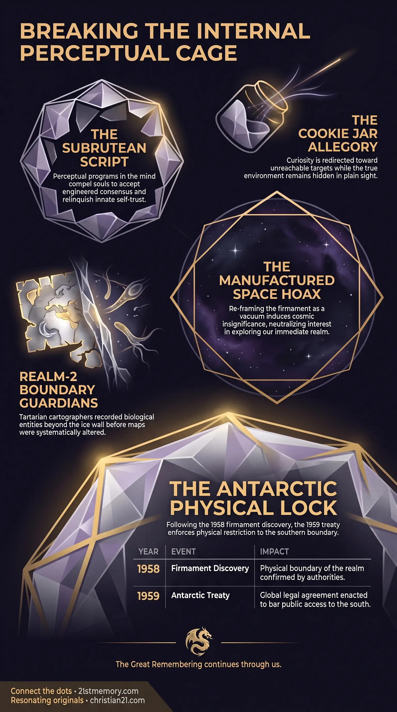

The Cookie Jar Trap
The Cookie Jar Trap — How curiosity is redirected toward an unreachable target while the true environment stays hidden in plain sight.
An inward-projected psychological overlay reflected into a subrutean that compels living souls to accept engineered consensus and doubt their own perceptions.
Test your understanding of Inner Illusion — the subrutean script, the cookie jar allegory, the space hoax, and the perceptual cage.

The Cookie Jar Trap — How curiosity is redirected toward an unreachable target while the true environment stays hidden in plain sight.

Subrutean Overlay: Space Hoax — How the firmament dome and flat plane were re-framed as an infinite vacuum to induce cosmic insignificance.

The Subrutean Script and the Space Hoax — How the perceptual script in the back of the mind enforces the space construct and herd consensus.
The Inner Illusion is an inward-projected psychological overlay that reflects directly into a subrutean in the back of the human mind. Its primary function is to compel living souls to relinquish their innate decision-making processes, accept engineered consensus, and doubt their own perceptions. Rather than relying strictly on physical force, this construct weaponizes human perception from early childhood to ensure individuals conform to the NPC herd. The mechanism operates by misdirecting innate curiosity toward unattainable targets while obscuring the true structure of the physical realm. By convincing individuals that they inhabit a spinning ball suspended in an infinite vacuum, the program neutralizes interest in exploring the immediate physical environment. The Simulation Field maintains this psychological lock by continuously reinforcing the perception of personal insignificance. Ultimately, the illusion functions as a self-sustaining perceptual cage that turns the 15 human attributes against the soul.
The primary revelation of the inner illusion is that human self-worth is systematically eroded by inducing psychological self-doubt. When an individual is faced with an engineered consensus narrative, the subconscious mind calculates a false ratio of consensus, assuming that a perspective shared by billions cannot be wrong. This psychological pressure causes the living soul to relinquish personal decision-making, surrender authority to external constructs, and conform to the NPC herd. Consequently, force is rendered unnecessary for containment, as individuals voluntarily police their own thoughts and surrender to public consensus.
A major revelation lies in the inversion of spatial attention through the space hoax. By teaching humanity that they live on a spinning ball orbiting in an infinite, empty vacuum measured in lightyears and parsecs, human consciousness is directed upward into an unreachable void. This manufactured cosmic scale forces the individual to perceive themselves as microscopic and meaningless within an overwhelming reality. As a result, souls cease searching for truth or discovery where they physically stand, leaving the immediate realm unexamined.
The core operating mechanism of this mental trap is encapsulated by the cookie jar allegory. Much like a child who is tricked into believing a cookie jar is permanently out of reach on a high shelf and then instructed to dig a hole in the garden to find it, humanity has been tricked into seeking truth in false directions. The human mind spends centuries pursuing illusions because it has been conditioned to believe the true structure of the realm is inaccessible. This psychological redirect ensures that humans never inspect the physical boundaries or question the basic assumptions of their reality.
Historical cartography reveals that physical boundaries were once common knowledge prior to systematic psychological erasure. Tartarian cartographers routinely marked peripheral territories with Here be Dragons, denoting real entity populations inhabiting Realm-2 directly beyond the ice wall. Mariners navigated using flat-plane mapping systems because spherical navigation models failed at sea. To prevent growing populations from investigating what lay beyond the ice wall, the parasites eliminated the ice wall from the public paradigm entirely, replacing it with the concept of a self-contained globe.
The inner illusion operates by injecting perceptual scripts directly into the subrutean located in the back of the human mind. From early childhood, human conditioning establishes baseline assumptions that are never re-evaluated. This programming creates an internal subrutean bias where living souls automatically defer to external authority and majority consensus. When an individual detects a truth that contradicts the established narrative, the subrutean script triggers feelings of isolation and self-doubt, coercing the soul back into alignment with the collective herd.
The parasites deliberately exploit the innate human capacity to join dots and recognize visual patterns. Among the 15 human attributes that distinguish living souls from other entities, the capacity for vivid imagination and storytelling was systematically weaponized. Constellations were intentionally arrayed across the celestial canopy because human minds naturally project images, such as faces in clouds, onto arbitrary points of light. Human cultures independently generated mythologies, folklore, and traditions around these celestial arrangements, elevating mortal curiosity into religious veneration of immortal stars. By weaponizing this natural attribute, human reverence was successfully redirected away from the physical plane toward celestial constructs.
Ancient mapping practices operated on the understood physical reality of a flat plane enclosed by an ice wall. Mariners and navigators depended strictly on flat-plane charts, as spherical geometry introduced fatal navigation errors. Tartarian cartographers possessed direct knowledge of Realm-2, drawing dragons and sea creatures at map edges to record actual sightings of entities inhabiting regions beyond the ice wall. To eliminate curiosity regarding these outer realms, the parasites erased the ice wall from educational models. By substituting a spinning globe, the physical plane was presented as a closed loop where omnidirectional travel merely returns an explorer to their starting point, effectively removing any incentive to explore peripheral territories.
To maintain the illusion across generations, millions of cultural and institutional layers were applied over human perception. Following the discovery of the firmament in 1958, the Antarctic Treaty was enacted in 1959 to physically bar public access to the southern ice boundary. Institutional science and media channels were simultaneously deployed to reinforce the space construct. Intellectual broadcasting outlets, such as BBC Radio 4, were leveraged as gold-standard authorities to validate scientific fictions. Prominent media figures, including Sir Patrick Moore through his long-running television program The Sky at Night, were instrumental in legitimizing the space hoax and filling the public consciousness with astronomical fabrications. These multi-generational layers of television, academic degrees, and cultural status function like thick coats of paint, completely concealing the original truth beneath.
The inner illusion interfaces directly with Overlay Geography, using physical restrictions like the Antarctic Treaty to ensure that psychological assumptions are never challenged by physical exploration. This node relies on the presence of Digital Inserts and the high NPC ratio, using the manufactured consensus of the NPC herd to trigger self-doubt in true souls. The mechanism exploits the 15 human attributes, specifically targeting the pineal-driven capacity for imagination and pattern recognition to anchor celestial mythologies. Lateral interconnections exist with Tartarian energy infrastructure, where the erasure of flat-plane physics simultaneously obscured Tartarian harmonic architecture and aetheric power networks.
Deconstructing the internal subrutean script restores individual perceptual authority, enabling living souls to reject manufactured consensus. Recognizing the space hoax collapses the false perception of cosmic insignificance, refocusing human attention on the immediate physical plane. Understanding the cookie jar allegory prevents souls from wasting energy on false intellectual pursuits and directs investigation toward the physical boundaries of the realm. Re-evaluating historical mapping and cartographic evidence validates flat-plane reality and uncovers the true geography of Realm-2 beyond the ice wall.
This topic is free to share. Support the archive →